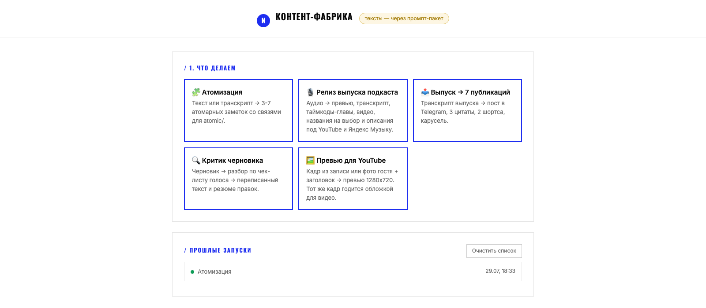

проектысобрала сама, на AICASES
пост, три цитаты, версия для linkedin, главы и описание для youtube
Вы записываете подкаст, эфир или видео. Конвейер превращает его в посты для Telegram, LinkedIn и Instagram, описания и нарезки в вашем голосе. Вам остаётся проверить и нажать «опубликовать».
ваш голос, а не «нейросетевой» текст · 15–20 минут вашего времени на выпуск

моя контент-фабрикаВыпуски выходят, а площадки пустые.
подкастМного говорите на созвонах и эфирах, но это не превращается в контент.
эфирыНужен регулярный контент, а времени на него нет.
личный брендУроки и вебинары могут стать постами и лид-магнитами.
обучениеГлавная мысль выпуска для Telegram-канала.
telegramКороткие посты-карточки с сильными фразами.
instagramДеловая версия мысли для профессиональной аудитории.
linkedinКороткий фрагмент с субтитрами для Reels и Shorts.
видеоТаймкоды, заголовки и описание для YouTube и подкаст-платформ.
youtubeЦепочка, которая из записи делает черновики для всех площадок.
системаОписание вашего стиля, по которому пишет AI.
голосГотовые публикации из вашего выпуска.
результатКак запускать конвейер самостоятельно.
🎁 бонусБесплатно: какие у вас площадки, как часто записываетесь, что уже есть.
Разбираем ваши лучшие тексты: тон, словечки, что вы никогда не напишете.
Настраиваю цепочку «запись → расшифровка → черновики для площадок» под ваш голос.
Прогоняем реальный выпуск, правим, пока тексты не станут «вашими».
Сама пользуюсь этим конвейером для подкаста и канала.
проверено на себеНастраиваю по примерам ваших текстов, а не общими промптами.
не «нейросетевой» текстСмотрю, какой контент приводит клиентов, а не просто охваты.
ex-Т-БанкКонвейер работает без меня: доступы и инструкция остаются у вас.
система, а не услугаЯ веду подкаст «Путь, который нравится» и канал.
Каждый выпуск требовал ещё дня работы: описания, главы, посты для разных площадок.
Собрала контент-фабрику: запись → расшифровка → главы, описания и 7 публикаций в моём голосе.
Выпуски выходят регулярно: на весь пакет постов уходит 20 минут проверки вместо дня работы.
После первого выпуска даю два круга правок по вашим замечаниям. Если и после них вы не готовы опубликовать под своим именем ни один текст, возвращаю деньги за настройку.
Подойдут эфиры, созвоны, вебинары и даже голосовые сообщения.
Нет, для этого делаем гайд голоса и правим первый выпуск вместе.
Вы. Или мы, в тарифе с ведением.
Обычно подписка на AI за пару тысяч рублей в месяц. Подберу на созвоне.
30 минут бесплатно: поймём, подходит ли это вам. Стартовая цена — для первых трёх клиентов суммарно по всем форматам, до 30 сентября. Дальше цена обычная.